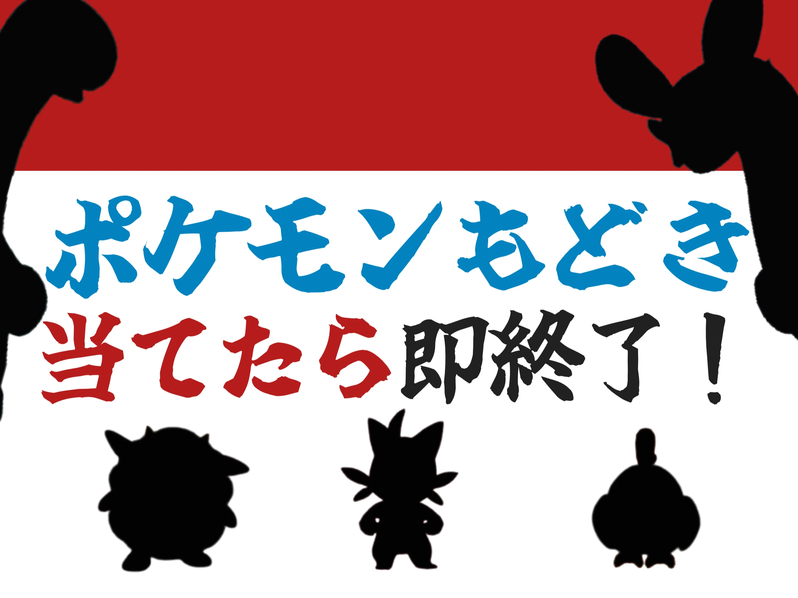
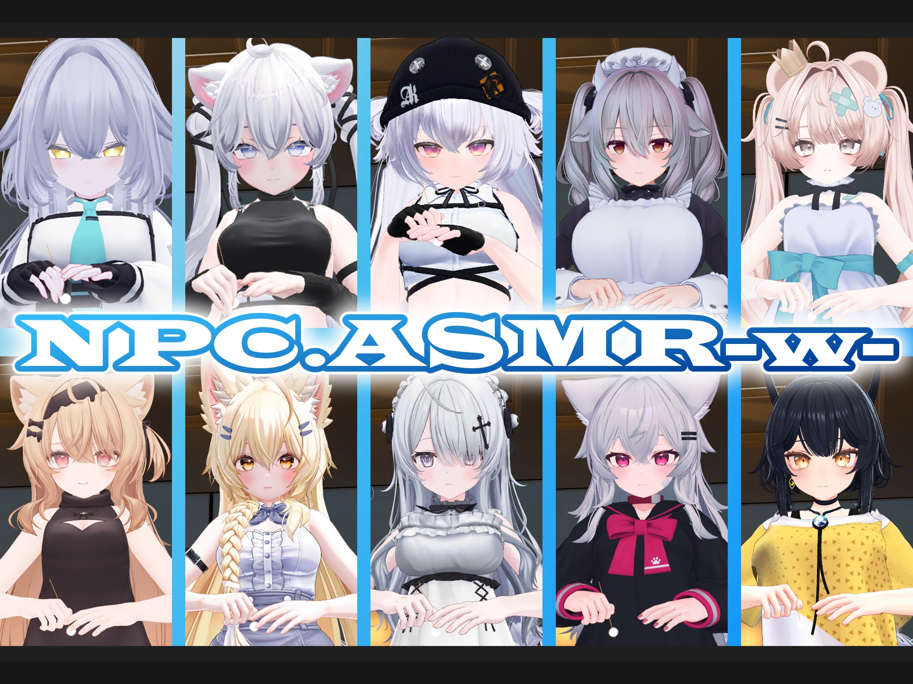

VRChat · Udon
ポケモンもどき当てたら即終了！
ポケモンと「ポケモンもどき」をシルエットで見分ける、一問のミスで終了するRTA・ランキング対応ゲームです。
WORLDS
VRChatで公開しているゲームやASMRのワールドです。

ポケモンと「ポケモンもどき」をシルエットで見分ける、一問のミスで終了するRTA・ランキング対応ゲームです。

NPC․ASMRのアバター数を増やし、テクスチャを圧縮した派生ワールドです。

しおちゃんのNPCと、寝息や環境音を再生するビデオプレイヤーを備えた睡眠向けワールドです。

アバターによる耳かきと、ASMR向けの音響・Udonギミックを備えたワールドです。

Akyoたちが走るレースを、複数人でリアルタイムに楽しむゲームワールドです。